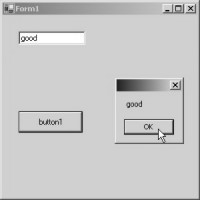

5. The Basics of C#
We are of the opinion that,
unless you are aware of what Visual Studio.Net does backstage, you will never
be comfortable using it. Therefore, we decided to devote an entire chapter in
explaining the rudiments of the C# programming language. We could have
requested you to refer to our voluminous books on C# programming, but we felt
that it would be unfair to expect you to learn, a great deal more than is
actually required. If you are already conversant with programming, you may skip
this chapter. However, we recommend that you read it anyway, and give us a
feedback on what impression you gain about our handiwork.
In order to expound the
language, we will commence by creating the smallest possible form, comprising
of a textbox and a button. When the user clicks on the button, our program gets
executed. Close all open Solutions, and then click on File - New - Project.
Select Visual C# Project as the project type, and Windows Application as the
template type. We have named this application as z1, and stored it in a
distinct location, i.e. c:\mukhi. Click on OK. You must ensure that the toolbox
and the Properties Windows are clearly visible on the screen. From the toolbox,
drag-and-drop a button and a textbox into the form. Thereafter, double click on
the button, to arrive at the Code Painter, and insert the following lines of
code:
string items;
items = "good";
textBox1.Text = items;
MessageBox.Show(items);
items = "bad";
textBox1.Text = items;
MessageBox.Show(items);
We have used a word called
'items', which stores a string. A string is a term used to represent a series
of characters or letters of the alphabet. On the next line, 'items' has been
assigned the value "good". As all string values are to be enclosed
within double inverted quotes, the word "good" too is enclosed within
double quotes. The Text property of the textbox named textBox1, is then
initialized to items, as it contains the string literal. We iterate the same
procedure for the Show function. Build and run the project. The output screen
displays a textbox and a button at their respective positions.
When you click on the button,
the word "good" will be highlighted in the textbox, as well as seen
in the message box. If you click on the OK button of MessageBox, the value
changes to "bad".
|
 |
|
|
Screen 5.1 |
Screen 5.2 |
Thus, wherever a string can be used,
it can be effortlessly substituted with words like 'items', etc. We shall term
words like 'items' as variables. Thus, the variable 'items' will hold one of
the two values: "good" or "bad".
Close the running program and
select the tab window of Form1.cs, which is the Code Painter. Amend the above
stated lines to the following:
int products;
products = 20;
MessageBox.Show(products.ToString());
products = products + 10;
MessageBox.Show(products.ToString());
A new variable called 'products'
has been created, and since it has the word 'int' preceding it, it is capable
of storing numbers only. In a sense, C# is being unequivocally apprized about
the type of values that the variable would hold. The variable 'products', of
data type int, shall only store a number, whereas in the earlier case, the
variable 'items', of data type 'string', is permitted to store only character
literals. The variable 'products' is initialized to a value of 20, and
displayed in the MessageBox. Unfortunately, the Show function in MessageBox
demands a string. Under such circumstances, the ToString function is used to
convert a number into a string format.
Once the MessagBox is closed,
the next statement in succession gets executed. Here, we observe an 'equal to'
sign =. Any statement with an 'equal to' sign, must be read from right to left.
The statement 'products + 10' on the right hand side, will evaluate to 20 + 10;
thereby, adding up to a total of 30. This value is then allocated to the
variable on the left hand side. Thus, the line ultimately evaluates to
'products = 30'. The MessageBox pops up, displaying this new value of 30,
thereby, confirming our contention. Screen 5.3 and screen 5.4 provides ample
proof of this.
|
Screen 5.3 |
Screen 5.4 |
Now, close the running application,
and replace the code with the new one, in exactly the same manner as is shown
below.
abc();
}
void abc()
{
MessageBox.Show("hi");
}
After inserting the above
statements, ensure that the code appears analogous to what is depicted below.
private void button1_Click(object sender, System.EventArgs e)
{
abc();
}
void abc()
{
MessageBox.Show("hi");
}
}
}
In due course of time, we shall
italicize, the freshly inserted code, in order to help you distinguish between the
recently added code and the previously existing one.
When we run the above program
and click on the button, a MessageBox is displayed with the message
"hi". Let us construe as to how this was made possible. A function is
a word, followed by a pair of round brackets ( ). Thus, abc is a function. The
perceptible difference here is that, unlike MessageBox.Show, which is a system
created function, the function abc is our handiwork.
To create our own function, we
write the name of the function, followed by the () brackets. The data type of
the return value must also precede the name of the function. Since abc does not
return any value, the word 'void' has been used. Void denotes 'nothing'. The
code of the function is enclosed within the curly braces {}. We have written
just a single function named MessageBox.Show, which embodies the word
"hi" in it.
When the application runs and
the button is clicked, the function abc gets called, in much the same fashion
as the MessageBox.Show was summoned earlier. The code of the function abc
executes the MessageBox.Show function. Thus, we see a message box, with the
word "hi" displayed in it.
Now, we shall learn to write a
function that accepts parameters. The code stipulated below corroborates this
concept.
private void button1_Click(object sender, System.EventArgs e)
{
int i ;
i
=abc(10,30);
MessageBox.Show(i.ToString());
}
int abc(int j, int k)
{
return j +
k;
}
We commence by creating a variable
i, in much the same manner, as we created 'items' and 'products'. Thereafter, on the next line, we insert a
statement with the 'equal to' sign. We trust you to be able to recall the rules
of the 'equal to' sign. Always evaluate the expression from right to left.
The right hand side calls
function abc, with two parameters. In layman terms, the function abc is
supplied with two values. So, the code of function abc, must be able to accept
these two values. In order to effect this, two variables are created within the
round brackets () of the function abc, both having a data type of int. Thus, we
are calling upon C# to store the first value of 10 in the int parameter
variable j, and the second value of 30 in the int parameter variable j.
As the function returns an int,
the datatype int precedes the word abc. C# can comprehend terms such as
'return'. So, it initially evaluates the expression j+k as 10+30, and returns
the result of 40 to the main program, which had called the function abc.
Effectively, the 'equal to' line evaluates to 'i = 40'. Thus, the variable i is
assigned the value of 40, which is displayed with the help of the
MessageBox.Show function. Functions return values, employing the 'return'
keyword. These return values may be of any data type.
Now, eliminate the entire newly
inserted code. This will ensure that the statements in the Code Painter appear
as follows:
private void button1_Click(object sender, System.EventArgs e)
{
}
It is time to revisit a few
concepts. Every time a button is inserted within a form, it is assigned a name,
by default. The name so assigned is 'button1' for the first button, button2 for
the second button, and so on. Similarly, the first textbox is assigned the name
'textBox1', and so on.
Now, when we double click on the
button in a form, we get transported to a certain location within the Code
Painter. The lines that are displayed exactly over and below this location, are
displayed above. Does this ring a bell somewhere?
You would realise that, we have
been transported to a position, within a function. This function is named as
button1_click. It does not return any value. Hence, its return value is void.
It accepts two parameters:
• 'sender', having a datatype of 'object'.
• 'e', having a data type of 'System.EventArgs'.
This is analogous to int j and
int k, which we had stumbled upon, earlier. The word 'private' is called an
access modifier. An access modifier determines who all are eligible to access
this function. We will elucidate this concept shortly.
Each time we click on a button
named zzz for instance, C# seeks out a function named zzz_Click, and executes
it. Being acquainted with these subtle concepts, enhances our understanding of
the techniques and workings of Visual Studio.Net, considerably.
Now, open a DOS box, and create
a folder called pqr, and go to this folder. Then, write the following lines of
code in a file called a.cs, using any word processor or editor.
C:\>md pqr
C:\>cd pqr
C:\pqr>edit a.cs.
a.cs
static void Main()
{
}
We have created a function
called Main, which has no return value. Hence, its return value is of type
void. We will explain the term 'static' in a little while from now. At the DOS
prompt, give the following command.
C:\pqr>Csc a.cs
Output
a.cs(1,1): error CS0116: A namespace does not directly contain members such as fields or methods
On doing so, we come across the
above specified error message.
You may receive an error message
disparate from the one displayed above; or you may even observe the error
message
'csc' is not recognized as an internal or external command, operable program or batch file.
In such cases, ensure that you
copy the file vcvars32.bat, located in C:\Program Files\Microsoft Visual
Studio.NET\Vc7\bin\, into your current directory. Thereafter, execute the
program.
C:\pqr>vcvars32
Run the csc command again, and
ascertain that the error displayed is akin to the one depicted above. The above
stated error message may make perfect sense to you; however, it is nothing but
mumbo-jumbo to us. Now, modify the file a.cs, to contain code as shown below,
and then, run the csc command on the file a.cs.
a.cs
class zzz
{
static void Main()
{
System.Console.WriteLine("hi");
}
}
c:\pqr>csc a.cs
c:\pqr >a
Output
hi
The csc command does not generate
any error, and produces a file called a.exe. The 'dir' command for directory
listing confirms this. Run this executable at the DOS prompt, and you will see
the output "hi" displayed on the screen.
All code written in the C#
programming language, must be an integral part of a 'container'; or in
technospeak, it is part of a 'class'. Thus, to banish the earlier error, we
placed all our code in a class called zzz. The name zzz is actually of no
consequence at all. In the Main function, we have also added a function named
System.Console.WriteLine, which displays the string parameter passed to it, on
the screen. The function Main is always the first function to be called. Thus,
when we execute the program a.exe, "hi" gets displayed on the screen.
The Main function is thus, the starting point or entry point, and any code
statement placed within this function, gets executed first. If this function
had been assigned any other name, abc for instance, nothing at all would have
got executed.
a.cs
class zzz
{
static void Main()
{
yyy.abc();
}
}
class yyy
{
public static void abc()
{
System.Console.WriteLine("abc");
}
}
Output
abc
In this program, we have
appended another class called yyy, following the class zzz. The class yyy contains
a function abc, whose sole business is to display "abc" on the
screen. Since the function does not belong to the current class, zzz, in order
to execute it, we have to specify the name of the class, followed by a dot
(which acts as a separator), and finally, the name of the function. As a
result, the final expression becomes yyy.abc. Thus, we find the text
"abc" displayed, at the time
of executing the above program.
Akin to the word 'private', the
word 'public' is also an access modifier. An access modifier permits or
restricts access to a function. The word private allows only the members of the
same class to access its functions, whereas, the word 'public' permits all
other classes to call functions located within this class. Therefore, abc can be
called from zzz. If we change public to private and run the compiler, using the
csc command, an error message will be flashed.
Error
a.cs(5,1): error CS0122: 'yyy.abc()' is inaccessible due to its protection level
Since abc is a member of the
class yyy, and as it is 'private', it forbids any outsider from accessing it.
This generates an error.
a.cs
class zzz
{
static void Main()
{
yyy.abc();
}
}
namespace aaa
{
class yyy
{
public static void abc()
{
System.Console.WriteLine("abc");
}
}
}
If we add the term 'namespace'
to aaa, it generates the following error:
Error
a.cs(5,1): error CS0246: The type or namespace name 'yyy' could not be found (are you missing a using directive or an assembly reference?)
If you replace yyy.abc(); with
aaa.yyy.abc();, the error will disappear. In the real word, there are
innumerable classes containing functions. Consequently, these classes are
clubbed together, based on the similarity in the function or the task that they
perform. So, classes that deal with printing are placed into one group; while
those that deal with the Internet, are housed in another. Every such group is
called a 'namespace'.
Since the class yyy has been
placed in the namespace aaa, the full reference to the function is not merely
abc, but aaa.yyy.abc. In other words, it is the name of the namespace, followed
by the name of the class and finally, the name of the function, with each
entity separated by dots. The term System.Console.WriteLine refers to the
WriteLine function, within the class named Console, under the System namespace.
The first entity is the namespace name. The second entity is the name of the
class. And, the last entity is always the name of the function. The requirement
of providing the name of the namespace, each time that the function is to be
called, proves to be awfully tedious and irksome. Therefore, we use the term
'using', which eases our task.
a.cs
using aaa;
using System;
class zzz
{
static void Main()
{
yyy.abc();
}
}
namespace aaa
{
class yyy
{
public static void abc()
{
Console.WriteLine("abc");
}
}
}
Output
abc
Both, the WriteLine and abc
functions do not have the namespace preceding the class. Here, the 'using'
keyword handles the issue of attaching the appropriate namespace with each
class. So, whenever C# encounters a function like yyy.abc, it prefixes the
class name with the word that follows the 'using' keyword, before flagging an
error. If a match is found with an existing namespace, no error is generated.
a.cs
using System;
class zzz
{
static void Main()
{
yyy.abc();
}
}
class yyy
{
public void abc()
{
Console.WriteLine("abc");
}
}
Now, let us effect a small
modification, by removing the word 'static' from the function abc. On running the
compiler with the command csc on the file a.cs, the following error will be
generated:
Error
a.cs(6,1): error CS0120: An object reference is required for the nonstatic field, method, or property 'yyy.abc()'
What is the cause behind
occurrence of this error generated? And, what is the significance of the word
'static'? Before we confront this volley of questions, we want you to attempt
the following program:
a.cs
using System;
class zzz
{
static void Main()
{
yyy a ;
a = new yyy();
a.abc();
}
}
class yyy
{
public void abc()
{
Console.WriteLine("abc");
}
}
Output
abc
By writing int i in one of the
earlier program, we had created a variable i, of data type int. Instead of
calling int as a data type, we shall now call it a 'class', and instead of
terming i as a variable, we shall now term it as an 'object'. Thus, when we
write 'yyy a', it implies that 'a' is an object of data type yyy. In C#
parlance, 'a' is an 'object', which is an instance of the class 'yyy'.
C# has divided classes into two
categories, viz. simple and complex. The class int is a simple class. Hence,
there is no need to create an object that is an instance of int. All data types
of the C programming language, have been converted into 'simple' classes in C#.
However, yyy is a 'complex'
class. Hence, it requires the 'new' keyword. New results in the creation of an
instance of class yyy. Therefore, the line 'a = new yyy()' results in creating
a new instance of class yyy. Deletion of this line, saddles us with the
following error:
Error
a.cs(8,1): error CS0165: Use of unassigned local variable 'a'
Thus, an object must be
instantiated or created by using the 'new' keyword, prior to accessing the
members embodied in it. Now, since the object 'a' has been initialized, a.abc()
will call the function abc, off class yyy. All other member can also be
accessed in a similar manner.
The C# purists term the 'simple'
class as the 'value' class, and the 'complex' class as the 'reference' class.
The 'static' keyword or
modifier, when used with a function, enables access to it without the need of
instantiating the class. Since a static function belongs to a class, and not to
an object, the name of the class must precede the static function during
access. References to non-static functions require the name of the instantiated
object.
a.cs
using System;
class zzz
{
static void Main()
{
yyy a ;
Console.WriteLine("Before");
a = new yyy();
}
}
class yyy
{
public yyy()
{
Console.WriteLine("yyy none");
}
}
Output
Before
yyy none
When we run the above program,
the first WriteLine function with 'Before' gets called. Thereafter, the
WriteLine function in the function yyy, within class yyy gets called, despite
our not having called this function.
This act can be attributed to
the keyword 'new'. It first allocates code for the class, then it looks for a
function name that matches with the class name. If such a function exists, it
gets called instantly. Thus, this function gets called at the time of creation
of an object. In technical jargon, it is termed as a 'constructor'. Once the
function finishes execution, the object is created.
Constructors need special
handling, and cannot be called explicitly. They get called at the time of
creation of an object. If we place the statement a.yyy(); after the 'new'
statement in Main, it will yield the following error:
Error
a.cs(9,1): error CS0117: 'yyy' does not contain a definition for 'yyy'
Thus, any code that needs to be
called at the time of creation of an object, can be placed in the constructor.
The object is created only after the constructor completes execution.
Constructors are not permitted to return values.
Thus, modifying the constructor
as shown below, results in an error, as depicted below:
public int yyy()
{
}
Error
a.cs(13,12): error CS0542: 'yyy': member names cannot be the same as their enclosing type
Constructors are also empowered
to accept parameters. This has been clearly established in the program that
follows.
a.cs
using System;
class zzz
{
static void Main()
{
yyy a ;
Console.WriteLine("Before");
a = new yyy("hi");
}
}
class yyy
{
public yyy(string s)
{
Console.WriteLine(s);
}
}
Output
Before
Hi
In the above program, the keyword
'new' along with yyy is assigned the word "hi", as a parameter. This
is reflected in the signature of the constructor, that contains a parameter s,
of type 'string'. Thus, we can pass as many parameters to a constructor, as we
desire; and can also have scores of varied constructors, co-existing in the
same class. This concept has been expounded in great detail, in our books on
C#.
a.cs
using System;
class zzz
{
static void Main()
{
yyy a ;
a = new yyy();
a.abc();
xxx x;
x = new xxx();
x.abc();
x.pqr();
}
}
class yyy
{
public void abc()
{
Console.WriteLine("abc yyy");
}
}
class xxx : yyy
{
public void pqr()
{
Console.WriteLine("pqr xxx");
}
}
Output
abc yyy
abc yyy
pqr xxx
This mammoth program evinces a few
fundamental concepts about programming. The class yyy, which has one function
named abc, is instantiated using 'new'; and then, the function abc is called
from it.
Within this program, is another
class named xxx. This class ends with the words : yyy. This signifies that the
class xxx is allowed access to the entities existing in the class yyy. The
resultant effect is that, the code contained in yyy, also belongs to class xxx.
In C# parlance, class xxx 'inherits' from class yyy. Thus, the class yyy is called
the 'parent' class, while the class xxx is called the 'derived' class.
x is instantiated to be an
instance of xxx. Since the class xxx encompasses both, xxx members and yyy
members, it is authorized to work with class yyy also. Thus, we are allowed to
call function abc from the object x, even though the object x does not contain
this function. It is an indirect reference, via class yyy. By using the concept
of inheritance, code written by other programmers can be borrowed or re-used in
a program, thereby, doing away with the need to re-invent the wheel every time!
But, what if we want to enhance
the features of the function abc? In such a situation, the existing function
can be overridden with a new copy of
abc, in the class xxx. In the next code block, everything remains unchanged,
except the introduction of the function abc.
So, modify the class xxx as shown below:
class xxx : yyy
{
public void abc()
{
Console.WriteLine("abc xxx");
}
public void pqr()
{
Console.WriteLine("pqr xxx");
}
}
To our utter amazement, the
following warnings are issued:
Warning
a.cs(23,13): warning CS0108: The keyword new is required on 'xxx.abc()' because it hides inherited member 'yyy.abc()'
a.cs(16,13): (Location of symbol related to previous warning)
To be honest, we are unable to
decipher the warning message. Despite the warnings, an executable file has been
created by the compiler. When we run the program, it produces the following
output:
Output
abc yyy
abc xxx
pqr xxx
Thus, we are able to call the
new function abc from the xxx class, albeit, with some warnings, which we shall
resolve subsequently. What happens if we wish to call the function from class
yyy also? This is easier said than done. We have rewritten the class xxx as
follows:
class xxx : yyy
{
public void abc()
{
base.abc();
Console.WriteLine("abc xxx");
}
public void pqr()
{
Console.WriteLine("pqr xxx");
}
}
Output
abc yyy
abc yyy
abc xxx
pqr xxx
The 'base' keyword calls the function
from the 'base' or the 'parent' class. Thus, we have access to the function abc
in the 'base' class, at the same time, in the 'derived' class.
C# is very finicky about data
types. The MessageBox.Show function expects only a string data type. Hence, the
int data type had to be converted into a string type, using the ToString
function. An error is generated when two dissimilar data types are equated to
one another. The only exception to this rule arises, when a 'base' class is
equated to a 'derived' class. The next example illustrates this point.
a.cs
using System;
class zzz
{
static void Main()
{
yyy a ;
a = new xxx();
a.abc();
}
}
class yyy
{
public void abc()
{
Console.WriteLine("abc yyy");
}
}
class xxx : yyy
{
public new void abc()
{
Console.WriteLine("abc xxx");
}
}
Output
abc yyy
We have initialized an object
'a', declared as class yyy, as an instance of the class xxx. This is
permissible, since we are equating an object of a 'base' class, to that of the
'derived' class. The sole point of concern here is that, the function will
always get called from the 'base' class and not from the 'derived' class.
The other point of interest here
is that, by adding the modifier 'new', the warnings do a vanishing act.
Warnings appeared, since the function in the 'derived' class had the same name
as the one in the 'base' class. It has to be explicitly declared as 'new',
because here, it has no relation to the function abc in the class yyy. Thus,
despite the fact that two functions share the same name of abc, they are
considered different, from C#'s point of view.
The term 'new' gets inserted by
default, incase it is omitted inadvertently. Therefore, C# gives us a benign
warning, and goes ahead with the generation of the exe file. At times, a warning
could be more dangerous than an error. This is because, notwithstanding the
fact that an exe file may have been created, there is always a possibility of a
serious problem lurking around the corner.
a.cs
using System;
class zzz
{
static void Main()
{
yyy a ;
a = new xxx();
a.abc();
}
}
class yyy
{
public virtual void abc()
{
Console.WriteLine("abc yyy");
}
}
class xxx : yyy
{
public override void abc()
{
Console.WriteLine("abc xxx");
}
}
Output
abc xxx
After incorporating two changes in
the above program. The net result is that, the function abc gets called from
the class xxx, and not from the class yyy, since the object is initilalized to
the class xxx. The first modification is the introduction of the word 'virtual'
with the function 'abc' in the base class yyy. The second modification is the
replacement of the word 'new' with the modifier 'override', in the derived
class xxx. The 'override' modifier is the antithesis of 'new', as it overrides
the function in the base class. Therefore, unlike 'new', the function abc in
class xxx, now overrides the function abc in class yyy, thereby, eschewing the
creation of a new function.
Deletion of the modifier
'virtual' from the function abc in class yyy, generates the error that is
projected below. Therefore, the modifiers 'virtual' and 'new/override', go hand
in glove.
Error
a.cs(20,22): error CS0506: 'xxx.abc()' : cannot override inherited member 'yyy.abc()' because it is not marked virtual, abstract, or override
a.cs
using System;
class zzz
{
static void Main()
{
yyy.abc();
}
}
class yyy
{
protected static void abc()
{
}
}
class xxx : yyy
{
public void pqr()
{
yyy.abc();
}
}
Error
a.cs(6,1): error CS0122: 'yyy.abc()' is inaccessible due to its protection level
Out of the three access modifiers,
we have already touched upon two of them, viz. 'public' and 'private'. The
third one, i.e. 'protected' allows only the derived classes to access a
function. Therefore, the static function abc, marked as 'protected', permits
only the 'derived' class xxx to access it. Apart from this, members of a class
are allowed to access any other member of the same class. However, no other
function, including Main, is permitted to make a reference to this function.
a.cs
using System;
class zzz
{
static void Main()
{
yyy a = new yyy();
a.abc(20);
}
}
class yyy
{
int i = 10;
public void abc(int i)
{
Console.WriteLine(i);
Console.WriteLine(this.i);
}
}
Output
20
10
Variables or objects that have been
created within a function, are only accessible from within that function. If we
create them outside a function, they are accessible across functions, and are
termed as 'instance variables'. So, the variable i, which is created outside
all functions, is called an 'instance variable', and it is accessible to every
other function contained in the class.
The value of 20, assigned to the
function abc, is saved in a parameter named i. In a situation like this, the
parameter i is granted a higher priority, than the instance variable. Thus, i
by itself, refers to the parameter i, whereas, the term this.i refers to the
instance variable i. If we had named the parameter as j, then, i and this.i
would have referred to the same instance variable i. Thus, all instance variables are prefaced with the word 'this',
purely as a precautionary measure.
The point to be accentuated here
is that, the keyword 'this' prefaces only the instance variables, and not
parameters or local variables, the ones that are created within a function.
a.cs
using System;
class zzz
{
// a Comment
/// An XML comment
static void Main()
{
}
}
>csc a.cs /doc:a.xml
a.xml
<?xml version="1.0"?>
<doc>
<assembly>
<name>a</name>
</assembly>
<members>
<member name="M:zzz.Main">
An XML comment
</member>
</members>
</doc>
Programmers detest documenting
their code. The C# framework has toiled relentlessly, to ease this task. So,
when we run the C# compiler with the switch /doc:a.xml, it generates a pure XML
file named a.xml, which includes the comments that we may have added. Any line
that begins with the // symbol, is called a 'comment', and is ignored by the C#
compiler. However, any line beginning with the /// symbol, is part of the XML
documentation.
Let us write a simple C#
program, which would display an empty window.
a.cs
using System.Windows.Forms;
namespace z10
{
class Form1 : System.Windows.Forms.Form
{
static void Main()
{
Application.Run(new Form1());
}
}
}
Now compile the above program, and
then, run the executable. Screen 5.5 is what shows up on our screen. It is a
simple blank window.
|
Screen 5.5 |
In the program, class Form1
derives from class System.Windows.Forms.Form, thereby, making Form1 the derived
class and System.Windows.Forms.Form the base class. In place of the full name,
we could have used : Form only, since System.Windows.Forms has been provided
with the 'using' keyword. But, you must be aware of the fact that, we are
afflicted with occasional fits of eccentricity!
Then, the Run function is called
from the Application object. Since no error is generated, it may be safely
assumed that, the Application object must be present in the class Form, since
it is not created in Form1.
You may recollect the rule
wherein it is specified that, members of the 'base' class, can be used in the
'derived' class. The parameter passed to the Run function, is a new instance of
the class Form1. As a result, a window is displayed as the output. What the run
function achieves internally, and how it works, is none of our concern!
a.cs
class zzz
{
static void Main()
{
int [] a;
a = new int[5];
a[1] = 10;
a[2] = 4;
a[1]++;
System.Console.WriteLine(a[1]);
int i;
i = 1;
System.Console.WriteLine(a[i]);
i = 2;
System.Console.WriteLine(a[i]);
}
}
Output
11
11
4
Any variable with a pair of
square brackets [] following it, is known as an array. An array is merely a collection
of a large number of variables, which share the same name and the data type. In
order to specify a size for this array, the good old 'new' statement is
employed. 'New' is passed a number, representing the quantity of variables that
need to be created. Thus, the array 'a' has 5 members, all belonging to the
data type, int. These ints are individually named as a[0] to a[4]. The name
a[5] is fallacious here, since the referencing begins from 0, and not from 1.
The only difference between a normal variable and an array variable is the
presence of the square brackets [].
Similar to a normal variable,
the value contained in the array, can be incremented with the help of the short
form ++. Thus, the array variable may be used in the same context as a normal
variable.
An array can be exploited
optimally, when it is in the form a[i], wherein, a is the name of the array,
and i is a variable. Since the variable a[i] does not exist per se, C# begins
by determining the current value of i. Assuming it to be 0, a[i] evaluates to
a[0]. If i happens to be 1, the variable now evaluates to a[1], and so on.
Thus, the WriteLine function displays the value of a[1] as 11. Now, changing
the value of variable i to 2, will lead to renaming the variable as a[2]. Thus,
despite the two WriteLine functions being passed the variable a[i], the values
displayed also change, since the value of i changes.
Let us now pen down a small
program, which demonstrates how we can execute specific portions of the code,
repeatedly.
a.cs
class zzz
{
static void Main()
{
int i;
for ( i = 10; i <= 12 ; i++)
System.Console.WriteLine(i);
}
}
Output
10
11
12
The 'for' statement contains two
semi-colons enclosed within the open and close brackets. Whatever code is placed
before the first semicolon, is executed only once. Thus, the variable i is
assigned a value of 10. Then, there is a condition that is placed between the
two semicolons. This condition is evaluated before the loop is entered.
Thereafter, it is evaluated every time the loop finishes execution. The 'for'
loop will keep iterating, as long as, this condition evaluates to True. After
each such iteration, the code placed between the second semicolon and the
closing round bracket, is executed.
If the value of i is less than
or equal to 12, the condition is True, and the line of code following the 'for'
statement is executed. As i currently has a value of 10, the condition
evaluates to True. The WriteLine function is then executed, resulting in the
display of a value.
Once this is done, the statement
between the second semi-colon and the closing bracket, is executed. In our
case, the value of i is increased by 1, making it 11. The condition is executed
once again, and it evaluates to True. Thus, the WriteLine function displays the
value of i as 11. Again, the variable i is incremented by 1. So, its value now
becomes 12, and the condition again results in True. This value of i is again
displayed using the WriteLine function. Once again, the value of i is incremented by 1, making it 13. This
time, the condition evaluates to False, because 13 is not less than 12. Thus,
the next line does not get executed, and the 'for' statement terminates.
a.cs
class zzz
{
static void Main()
{
int [] a;
a = new int[3];
int i;
for ( i = 0; i <= 2 ; i++)
a[i] = i*10;
for ( i = 0; i <= 2 ; i++)
System.Console.WriteLine(a[i]);
}
}
Output
0
10
20
In this program, we have created
an array of ints. In fact, we could have created an array of any other data type
too. The array is initialized to three ints, using the 'for' statement. In the
first iteration, as the value of i is 0, the variable becomes a[0], and the
value that it stores is 0. In the next iteration, i becomes 1. Thus, the
variable a[1] is assigned the value of 10. Finally, in the last iteration, as
the value of i is 2, the variable a[2] is assigned a value of 20.
The second 'for' statement is
used, to display the values contained in the array. Thus, employing the same
approach, the WriteLine function displays the values stored in the 3 elements.
In short, the 'for' statement and an array, are a match made in heaven.
a.cs
class zzz
{
static void Main()
{
int i;
short j;
i = 10;
j = i;
}
}
Error
a.cs(8,5): error CS0029: Cannot implicitly convert type 'int' to 'short'
C# is very fussy about the data
types present on the left and the right hand side of an 'equal to' sign. They
are required to be the same, but with a single exception. As i and j have
different data types, they cannot be equated. Thus, an error is generated, as
shown above.
A 'short' is similar to an int,
except for the fact that, it stores a smaller range of numbers than an int. If
we want to equate the two variables, the only way out is, to convert the int
data type into a short. To effect this, we place the name of the data type in
brackets before the variable,
j = (short)i;
We replace the last line of the
earlier program, with the line stated above. So, during the execution of the
above statement, the int data type becomes a short. Now, since both sides of
the 'equal to' sign have the same data type, C# does not complain, and no error
is generated.
a.cs
class zzz
{
static void Main()
{
yyy a;
a = new yyy();
a.i = 10;
System.Console.WriteLine(a.i);
}
}
class yyy
{
public int i;
}
Output
10
The above program seems
repetitive, but it illustrates a fundamental point. A variable can be
initialized to a value, such as a.i = 10. The value of the variable can be
displayed using the WriteLine function. The salient point is that, we can
accomplish only two things with a variable, set its value and get its value!
While assigning or retrieving
the value, no code can possibly be executed. Thus, no error checks can be
performed either. Now, let us endeavour to surmount this obstacle.
a.cs
class zzz
{
static void Main()
{
yyy a;
a = new yyy();
a.i = 10;
System.Console.WriteLine(a.i);
}
}
class yyy
{
int ii;
public int i
{
set
{
ii = value;
System.Console.WriteLine("set " + value);
}
get
{
System.Console.WriteLine("get " + ii);
return ii;
}
}
}
Output
set 10
get 10
10
In the above example, the code
in the class zzz, remains totally unchanged. However, major changes have been
effected in the class yyy. In yyy, i is declared as a variable of data type
int, but with an open and close braces following it. Had it been a normal
variable, it would have ended with a semi-colon. Within the brackets, two new
words, 'get' and 'set' are inserted, with each of them followed by a pair of
braces.
Each time the value of the variable
is altered, the set block gets called; to be precise, the 'set accessor' is
called. This accessor is provided with a free variable called 'value', which
gets the value of 10 as a.i is initialized to 10. The reserved word 'value',
contains the number that is then assigned to an instance variable ii.
While retrieving the value of
the variable i, the get accessor is called. The current value contained in the
variable ii, is returned. Code can now be called in these accessors. Since it
is very different from the normal variables, it has been termed as a property.
The class zzz is completely oblivious of these aspects, since it is unable to
distinguish between a property and a variable.
a.cs
class zzz
{
static void Main()
{
yyy a;
a = new yyy();
a["vijay"] = 10;
System.Console.WriteLine(a["vijay"]);
}
}
class yyy
{
int ii;
public int this[string i]
{
set
{
ii = value;
System.Console.WriteLine("set " + i + " " + value);
}
get
{
System.Console.WriteLine("get " + ii);
return ii;
}
}
}
Output
set vijay 10
get 10
10
Arrays are of great utility,
since they are a collection of similar items. In this program, we would like to
work with an array, without having to create one. 'a' is an instance of the
class yyy. It is not an array, since square brackets are missing. Now, despite
having clearly stated that, a is an instance of class yyy, and not an array, we
use the notation of
a["vijay"].
Class yyy has a property called
'this' with square brackets; thus, making this a unique property or an indexer.
An indexer provides the look and feel of an array, despite there being none at
all. The line a["vijay"] = 10, calls the set accessor with 'vijay',
as a parameter to the 'this' indexer. The string 'vijay' is stored in i, and
the number 10 is stored in the reserved word 'value'. The values are printed
out, to ascertain the above explanation.
The 'get accessor' is called,
when the value of the variable has to be returned. Therefore, the output
displays a value of 10. i is used to figure out the array indexer, in case there
are multiple indexers. The array notation may be used to hold more than one
parameter. Conclusively, an indexer renders the usage of classes, much more
intuitive.
a.cs
class zzz
{
static void Main()
{
yyy a;
a = new yyy();
}
}
interface yyy
{
}
Error
a.cs(6,5): error CS0144: Cannot create an instance of the abstract class or interface 'yyy'
The program introduces a new
term called 'interface', which we shall explain shortly. An interface cannot
have the keyword 'new' prefixed to it, in other words, it cannot be
instantiated.
a.cs
class zzz
{
static void Main()
{
xxx a;
a = new xxx();
}
}
interface yyy
{
void abc();
}
class xxx : yyy
{
}
Error
a.cs(13,7): error CS0535: 'xxx' does not implement interface member 'yyy.abc()'
We have an interface yyy, which
has a function called abc. Deriving the class xxx from the interface yyy,
generates the above error. To eliminate the error, we attempt the following:
a.cs
class zzz
{
static void Main()
{
xxx a;
a = new xxx();
a.abc();
yyy b;
b = new xxx();
b.abc();
}
}
interface yyy
{
void abc();
}
class xxx : yyy
{
public void abc()
{
System.Console.WriteLine("abc");
}
}
Output
abc
abc
The above error is banished by
adding the function abc in the class xxx. Thus, whenever a class derives from
an interface, it must contain a body or code, for all the function names that
are present in the interface. If there are 100 function names or prototypes in
the interface, each one of the 100 functions, needs to be implemented in class
xxx.
The concept of an 'interface',
is very different from that of a class. A class contains a lot of free code.
However, there is no code provided along with an interface. Instead, a function
body is to be provided for the function prototypes, which are present in the
interface for a class that derives from it. A class can be derived from
multiple interfaces, but not from multiple classes. Also, an object b, of data
type interface yyy, can be initialized to an instance of class xxx; but the
object can then access only the members of the interface yyy, and not those of
the class xxx.
a.cs
class zzz
{
static void Main()
{
xxx a;
a = new xxx();
a.abc();
}
}
class xxx
{
public delegate void pqr(int i);
public void pqr1(int j)
{
System.Console.WriteLine("pqr1 " + j);
}
public void abc()
{
pqr a = new pqr(pqr1);
a(100);
}
}
Output
pqr1 100
In class xxx, the function
prototype of pqr specifies that, it accepts an int as a parameter, and returns
void. Also, a new keyword called delegate, has been introduced. This new introduction
makes pqr a 'delegate'. The function abc, which gets called from Main, creates
an instance of the delegate pqr, by using the same keyword 'new'. The only
difference here is that, pqr1, which is the name of a function, is provided as
a parameter to it, and round brackets are used in place of the square brackets.
Calling the delegate function
would result in an indirect call to the function pqr1. Thus, we have been able
to execute a function indirectly. The next example unfurls the true powers of
delegates and events.
a.cs
public delegate void pqr(int p);
class zzz
{
static void Main()
{
xxx a;
a = new xxx();
a.c += new pqr(a.pqr1);
a.abc();
a.c += new pqr(a.pqr2);
a.abc();
}
}
class xxx
{
public void pqr1(int j)
{
System.Console.WriteLine("pqr1 " + j);
}
public void pqr2(int j)
{
System.Console.WriteLine("pqr2 " + j);
}
public event pqr c;
public void abc()
{
c(10);
}
}
Output
pqr1 10
pqr1 10
pqr2 10
In the above program, the delegate
pqr has been made a global entity. A global entity is one, which is created
outside the class. In class xxx, c is a variable of data type pqr, and contains
the 'event' keyword. As a consequence, c is referred to, as an event object. In Main, we first create 'a' as an instance
of class xxx. Then, we use a special notation of += to initialize it to
delegate pqr. As we have seen in the earlier example, a function must be
specified with a delegate. So, the address of a function pqr1 in class xxx, has
been provided. 'c' is then initialized to delegate pqr. It throws no errors,
since 'c' is of data type pqr. When the abc function is called, it calls the
event c. Observe the use of open and close round brackets, while an event is
being called. The event, in turn, calls the function pqr1, with a parameter of
10.
So, what is the remarkable achievement here? In the next line, the same += is repeated, but with a new function named pqr2, as a parameter to a delegate. Therefore, when we execute the two functions pqr1 and pqr2, both the functions get called, since we have added pqr2 to the current event. Thus, the event object keeps track of all the functions that need to be called, whenever the event occurs. As a consequence, it relieves us of carrying out the above housekeeping tasks.